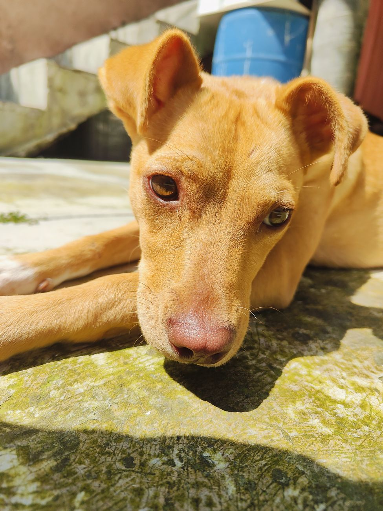
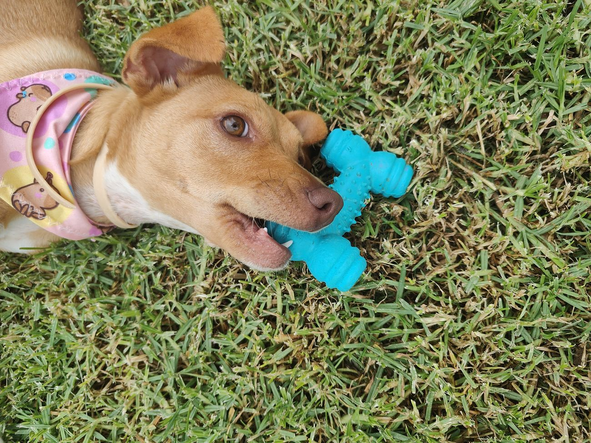
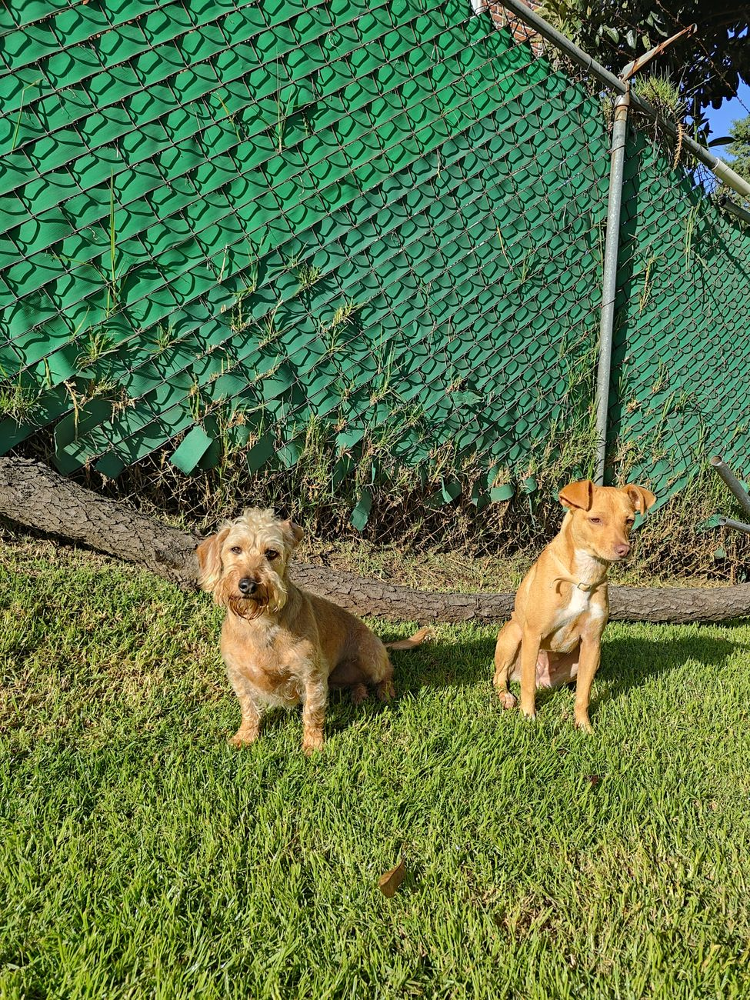
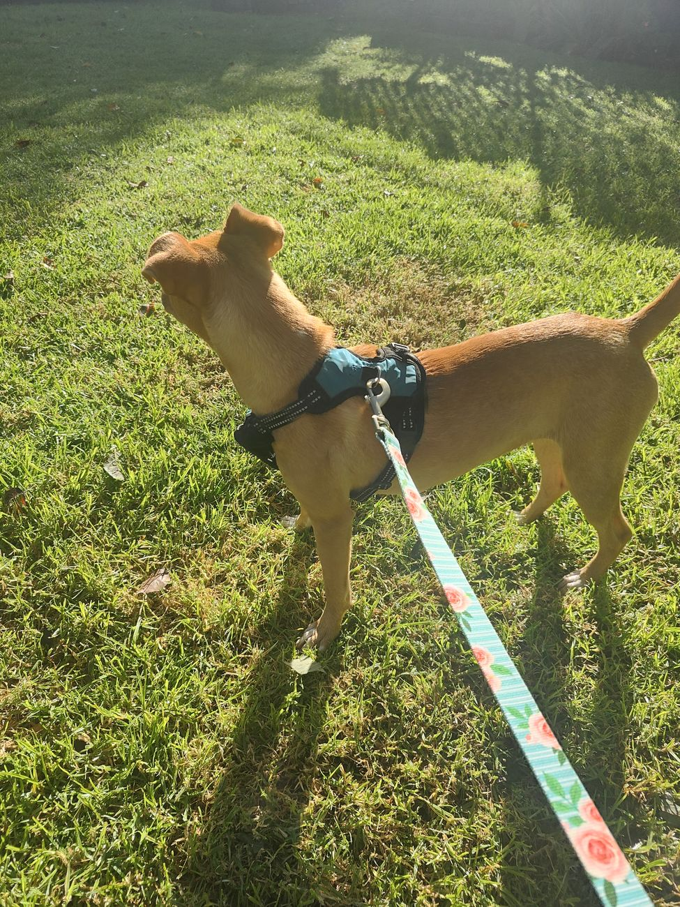
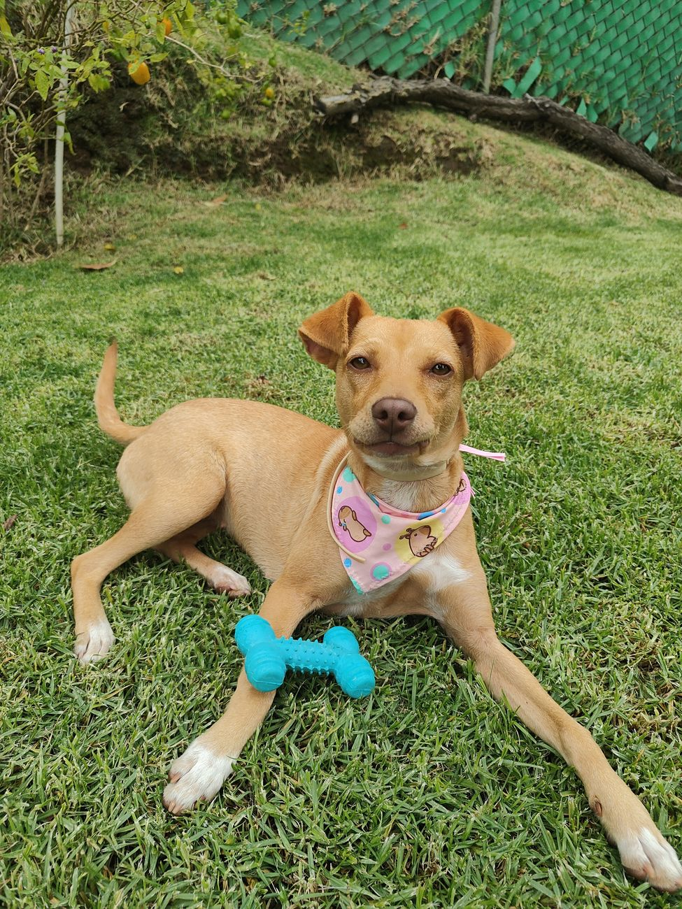
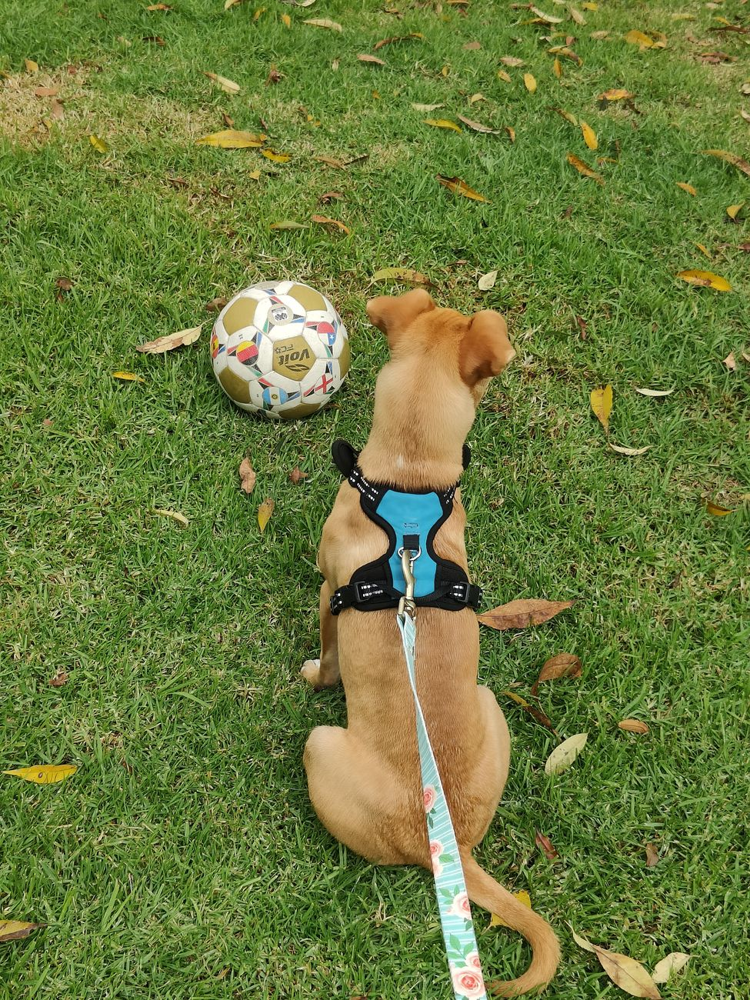

Así es la Chayis
Valeria y yo la rescatamos de la calle y hoy está en un hogar temporal, lista para una casa definitiva. Le encanta morder su hueso, rodar en el pasto y echarse al sol. Con la gente es puro cariño.
- Edad
- 6 a 7 meses
- Carácter
- Juguetona y amigable
- Cómo es
- Color caramelo, patitas blancas y orejas dobladas
- Dónde está
- Huixquilucan, Estado de México
- Salud
- Pregunta por sus vacunas y su esterilización en WhatsApp
Un día con Chayito






Cómo adoptarla
Lo que pedimos
- Ser mayor de edad y mostrar una identificación
- Que toda tu familia esté de acuerdo
- Que viva con la familia, nunca en azotea ni con cadena
- Un espacio seguro del que no pueda escaparse
- Darle veterinario, vacunas y esterilización
- Mandarnos noticias de ella después de la adopción
Los pasos
- Llenas el cuestionario de aquí abajo.
- Platicamos por WhatsApp y hacemos una videollamada.
- Conoces a Chayito y vemos dónde va a vivir.
- Firmamos un acuerdo de adopción y se va contigo.
Cuéntanos de tu hogar
Toma un par de minutos. Tus respuestas salen en un mensaje de WhatsApp que tú revisas y envías, y lo demás lo platicamos ahí. Esta página no guarda nada.